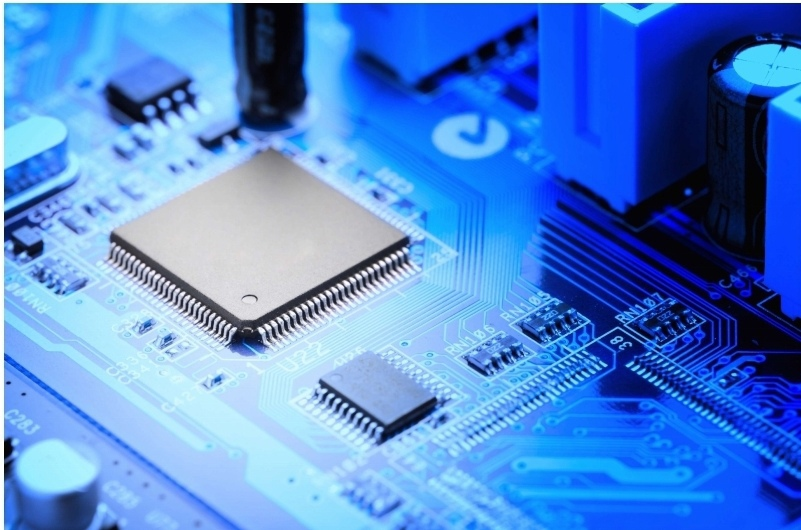
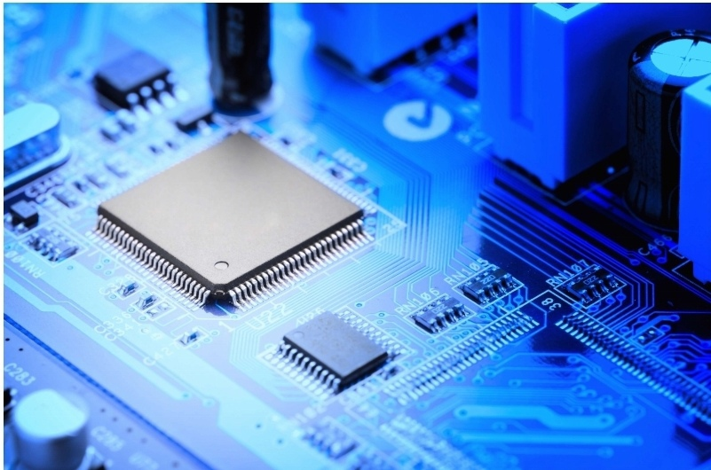

Научно-
техниченский
центр разработки
сложных систем


Создание специализированного программного обеспечения и реконфигурируемых программных модулей для ПЛИС основных этапов цифровой обработки сигналов спутниковых и волоконно-оптических систем связи: модуляции и демодуляции, компенсации, помехоустойчивого кодирования и декодирования, мультиплексирования и демультиплексирования, автоматизированной обработки протоколов, создания базы данных. Выполнение проектов в среде автоматизированного проектирования для выбранных спецификаций ПЛИС производства Xilinx , Intel (Altera), Microsemi с отображением качественных характеристик выполненных проектов. Выполнение экспериментальных исследований (проведение испытаний) фрагментов сетей спутниковой связи и волоконно-оптических линий связи